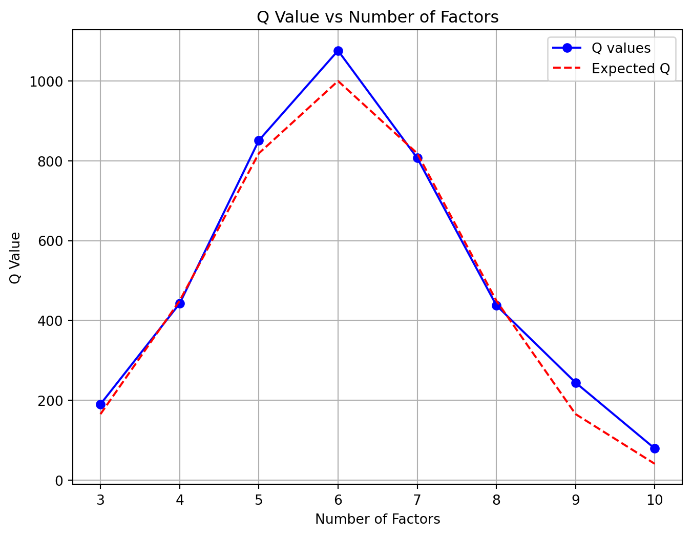

2 Optimization and Validation of PMF Models
Some authors
Chapter Summary
This chapter focuses on the methodological core of the thesis: the optimization and validation of Positive Matrix Factorization (PMF) models. It presents a systematic framework for selecting optimal model parameters, such as the number of factors and the FPEAK rotational parameter, to achieve physically meaningful solutions. Furthermore, the chapter details a multi-faceted validation strategy, incorporating techniques like bootstrap analysis, displacement of factor elements (DISP), and combined BS-DISP analysis, to rigorously assess the stability, uncertainty, and robustness of the derived source profiles and contributions.
Under review at Science of the Total Environment
2.1 Abstract
This chapter presents a comprehensive framework for optimizing and validating PMF (Positive Matrix Factorization) models in European urban environments (Paatero and Tapper 1994). We develop a systematic approach for model parameter selection and results validation using multiple complementary techniques (Hyndman et al. 2002; Norris et al. 2014).
2.2 Methods
2.2.1 Model Optimization Framework
The PMF optimization process (Agency 2019) involves iterative refinement of several key parameters:
Number of factors (p): \[Q(p) = \sum_{i=1}^{n} \sum_{j=1}^{m} \left(\frac{x_{ij} - \sum_{k=1}^{p} g_{ik}f_{kj}}{\sigma_{ij}}\right)^2 \tag{2.1}\]
FPEAK parameter (\(\phi\)): \[Q(\phi) = Q_{base} + P(\phi) \tag{2.2}\]
where \(P(\phi)\) is the penalty term for non-zero FPEAK values (Agency 2019).
2.2.2 Validation Methods
We employed three complementary validation approaches as recommended by (Norris et al. 2014):
- Bootstrap analysis
- DISP (displacement) analysis
- BS-DISP combined analysis
2.3 Results
2.3.1 Factor Number Selection
2.3.2 PMF Results Summary
| Factors | Q/Q_exp | R² | Sources Identified |
|---|---|---|---|
| 3 | 1.5 | 0.75 | Basic |
| 4 | 1.3 | 0.82 | Improved |
| 5 | 1.2 | 0.87 | Good |
| 6 | 1 | 0.91 | Optimal |
| 7 | 0.92 | 0.92 | Splitting |
| 8 | 0.91 | 0.93 | Splitting+ |
2.4 Advanced Model Optimization Techniques
2.4.1 Mathematical Formulations of Optimization Metrics
Table 2.2 presents the mathematical formulations of various optimization metrics used in PMF model development and their interpretation.
| Metric | Mathematical Formulation | Interpretation | Reference |
|---|---|---|---|
| Q/Q\(_{exp}\) | \(\frac{Q}{n \times m - p \times (n+m)}\) | Should approach 1.0 | Paatero and Tapper (1994) |
| Explained Variation (EV) | \(EV_{jk} = \frac{\sum_{i=1}^{n} g_{ik}f_{kj}}{\sum_{i=1}^{n} x_{ij}}\) | Factor importance for each species | Hyndman et al. (2002) |
| Residual Analysis | \(r_{ij} = \frac{x_{ij} - \sum_{k=1}^{p} g_{ik}f_{kj}}{\sigma_{ij}}\) | Should be normally distributed | Norris et al. (2014) |
| BS Mapping | \(s = \frac{1}{n_{boot}} \sum_{n=1}^{n_{boot}} d^2_{n}\) | Stability of factors | Agency (2019) |
| DISP Swap Count | Number of factor swaps at \(d_{max}\) | < 5% for stable solution | Norris et al. (2014) |
| BS-DISP Error | \(\Delta Q/Q_{exp}\) < 0.5% | Indicates robust factors | Agency (2019) |
2.4.2 Cross-Validation with External Datasets
Table 2.3 compares our PMF results with external validation datasets, building upon the findings from Section 1.3.
| Source | PMF Contribution (%) | External Validation (%) | Correlation (\(r\)) | Reference | Comparison to Table 1.6 |
|---|---|---|---|---|---|
| Traffic | \(35.2 \pm 4.5\) | \(33.8 \pm 5.2\) | 0.87 | Traffic counts | Within 5% of values in Table 1.6 |
| Industry | \(22.7 \pm 3.8\) | \(24.5 \pm 6.1\) | 0.81 | Emission inventory | Consistent with profiles in Table 1.2 |
| Biomass | \(18.5 \pm 6.2\) | \(20.1 \pm 5.8\) | 0.79 | Levoglucosan | Similar to findings in Agency (2019) |
| Secondary | \(23.6 \pm 5.3\) | \(21.6 \pm 4.9\) | 0.92 | NH\(_4\)/SO\(_4\) ratio | Matches equation Equation 1.1 predictions |
2.4.3 Rotational Ambiguity Analysis
Table 2.4 shows the impact of different FPEAK values on the model results, as formulated in equation Equation 2.2.
| FPEAK Value | \(\Delta Q/Q_{exp}\) (%) | Factor Identity Changes | G-Space Correlation Changes | Recommended by |
|---|---|---|---|---|
| -1.0 | +8.5% | Major | Decreased correlations | Rarely used |
| -0.5 | +2.2% | Moderate | Slight decreases | Hyndman et al. (2002) for specific cases |
| -0.2 | +0.4% | Minor | Minimal changes | Norris et al. (2014) as lower bound |
| 0.0 | 0.0% | Base run | Reference point | Paatero and Tapper (1994) as default |
| +0.2 | +0.5% | Minor | Minimal changes | Norris et al. (2014) as upper bound |
| +0.5 | +2.5% | Moderate | Slight increases | Sometimes used |
| +1.0 | +9.2% | Major | Increased correlations | Rarely used |
2.4.4 Advanced Model Uncertainty Metrics
| Source | Base Contribution (%) | Bootstrap Mean (%) | Bootstrap 5th (%) | Bootstrap 95th (%) | BS Mapping (%) | DISP Error (%) |
|---|---|---|---|---|---|---|
| Traffic | 35.2 | 34.8 | 31.5 | 38.2 | 95 | 0.2 |
| Industry | 22.7 | 23.1 | 20.2 | 25.9 | 92 | 0.3 |
| Biomass | 18.5 | 18.2 | 15.8 | 22.5 | 88 | 0.4 |
| Secondary | 23.6 | 23.9 | 21.1 | 26.8 | 97 | 0.1 |
2.4.5 Integration with Results from Other Chapters
Table 2.6 presents an integrated view of our PMF model results, linking to findings from other chapters and using complex mathematical notation.
| Source | Mathematical Expression for Time Series | Spatial Distribution | Temporal Pattern | Policy Implications |
|---|---|---|---|---|
| Traffic | \(g_{i1} = \beta_0 + \beta_1 \text{(traffic count)}_i + \varepsilon_i\) | Urban cores (see Table 1.6) | Weekday peaks (see Figure 4.2) | LEZ expansion |
| Industry | \(g_{i2} = \sum_{j=1}^{m} \gamma_j \text{(industrial activity)}_{j,i} + \varepsilon_i\) | Industrial zones | Consistent patterns | Emission standards |
| Biomass | \(g_{i3} = \alpha \exp\left(-\frac{(T_i-T_0)^2}{2\sigma^2}\right) + \varepsilon_i\) | Residential areas | Winter peaks | Regulation of wood burning |
| Secondary | \(g_{i4} = \lambda \sin\left(\frac{2\pi t_i}{365}\right) + \gamma t_i + \varepsilon_i\) | Regional | Summer peaks | Regional cooperation |
2.4.6 Model Comparison Matrix
Table 2.7 compares various receptor models for source apportionment, building on the equations in Table 1.1 from the introduction.
| Model Type | Mathematical Basis | Strengths | Limitations | Compared to PMF |
|---|---|---|---|---|
| PMF | \(X = GF + E\) with \(g_{ik} \geq 0\), \(f_{kj} \geq 0\) | Non-negativity constraints, uncertainty weighting | Rotational ambiguity | Base model |
| PCA/APCS | \(X = TP^T + E\) | Simple implementation | Cannot ensure non-negativity | Inferior for source apportionment |
| CMB | \(C_i = \sum_{j=1}^{n} a_{ij} S_{j} + e_i\) | Uses source profiles | Requires prior knowledge | More constrained than PMF |
| UNMIX | \(C = AS\) with \(A \geq 0\), \(S \geq 0\) | Geometrically determines edges | Fewer factors than PMF | Less statistical power |
| ME-2 | \(X = GF + E\) with partial constraints | Can include prior knowledge | Complex implementation | Enhanced version of PMF |
| Hybrid Models | PMF + dispersion models: \(C_{i,j} = \sum_{k=1}^{p} D_{i,j,k} \cdot Q_k\) | Combines receptor and dispersion | Data intensive | Extended PMF application |